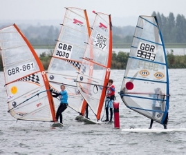
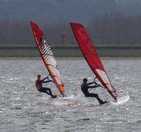
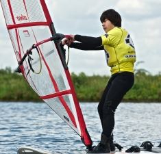
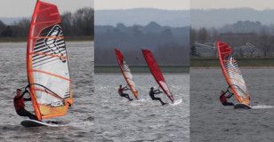

Welcome to Youth Windsurfing
Queen Mary Sailing Club is part of a nationwide network of windsurfing clubs where young people can get together to learn new windsurfing skills and have a laugh with their mates on the water. Since the same faces come back regularly, you'll definitely make new friends as well.
Whatever your skill level, regular windsurfing sessions will improve your windsurfing ability very quickly. If you've never tried it before, you'll have the basics mastered in no time. From first time windsurfer to a relative expert, Queen Mary Sailing Club welcome all levels.
QM offers young people two opportunities; to be part of club sessions plus participate in the Interclub events where your team can go head-to-head with other teams in your region to decide an overall regional champion. Each club can enter the Interclub challenges with a team of up to 15 people aged 16 and under.
DATES AND HOW TO BOOK
Anyone wishing to take part (including those with their own board) must book a session at a time using the link below. You will receive a confirmation email to confirm your place. Booking is open to members with confident RYA Stage 2/3 skills for Skimmers, and RYA Stage 4 for Shredders.
Skimmers:
The Skimmers will use:
- Bic Techno Boards
- Youth Members sails — A range of Tushingham sails from Severn 3.m-4.5m, Concept 5.5m, Vandal Addict, Gaastra Matrix 6.5m
Shredders:
The Shredders will use:
- All Select short board (Starboard Carve, Go, Kode...)
- All Select sails including all Gaastra range
- Foiling kit when appropriate
Join In
Book any of these sessions through the links below.
Winter Training
During the winter, Skimmers and Shredders will continue but less frequently, once per month. We also have further activities including a winter windsurf Race squad (Stage 3+).

Skimmers
Regular participation and racing for QM Members with RYA Stage 2. Improve, socialise and have fun! Included for Youth Select members.
£44.00
Book Now
Shredders
Regular participation and racing for QM Members with RYA Stage 4 with the ability to plane. Improve, socialise and have fun! Included for Young Adult members.
£44.00
Book Now
Windsurf Race Squad
Get out and try your hand at racing. A new opportunity for winter 2023! Build on your current windsurf skills with some excellent tuition on how to get around a race course. You must have approval from the Chief Windsurf Instructor to join this squad (Email chief.windsurf@queenmary.org.uk).
£70.00
Book Now
Simon Winkley Youth Windsurfing Coaching
Join Simon Winkley — A youth coaching day for future legends. Includes the use of full select kit.
£45.00
Book Now